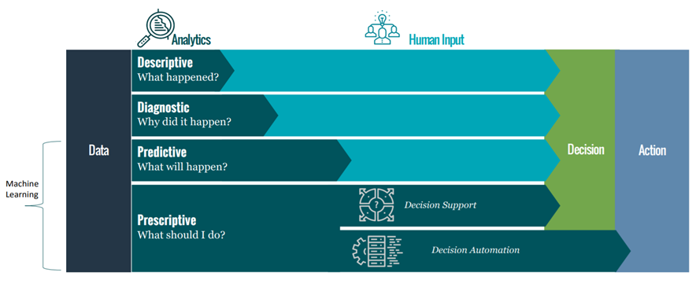

Machine Learning is applied to implement the following analysis types:
Today’s complex systems gather data from a few to thousands of smart devices and transmit them to the organizational server or cloud environment. Based on historical data, it is always possible to generate detailed insights into past events by using advanced machine learning techniques. These groups of ML-based algorithms that process and summarize the raw data and provide actionable insights from the data basically comprise the field of study called descriptive analytics.
We need to know how the system works or what a dataset is describing. Descriptive analytics helps to understand the nature of the data.
Data Aggregation, data summarization, mathematical logical operations, data mining (e.g., clustering algorithms), and so on are some examples of descriptive analytics. Descriptive analytics requires a high volume of data. Recent technological advances have demonstrated that cloud storage is capable of storing huge volumes of data, and cloud servers can process complex tasks using high-performance computers, and by applying cloud analytics.
So far we have learned about the Descriptive Analytics, which helps to describe the system or process by analyzing the data. Next, the obvious question comes which is related to the cause or reasoning behind that description.
Diagnostic analysis detects existing relationships between potential causes and observable effects. Mostly, this kind of analysis is probabilistic and helps find the probability that a certain identified cause brings about a specific effect.
The majority of more complex scenarios are characterized by a huge number of latent causes (sometimes called factors) that are too difficult to analyze. On the other hand, deciding to drop all unknown causes means reducing the predictive ability of the model with a proportional loss of accuracy. Therefore, the primary goal of the diagnostic analysis is not necessarily to find out all the causes but to list the observable and measurable elements (known as factors), together with all the potential latent ones (which are generally summarized into a single global element).
Predictive analytics rely on historical data and utilize advanced statistical or machine learning techniques to model the behavior or pattern so that it is possible to predict the likelihood of possible future trends or patterns in data. To summarize, it predicts what will happen in the future by learning the historical patterns and data correlations of existing data. Predictive analytics have been widely used for different applications including predictive maintenance, prediction of price, supply-demand trend, or prediction of the likelihood of any outcome. According to SAS, which is one of the top leading companies in analytics, there are two types of predictive models – (i) classification based models that conduct the prediction analyses by class membership, and (ii) regression-based models, that predict a number based on the historical observations and likelihood. State-of-the-art predictive modeling techniques include statistical regression-based models, decision trees, and neural or deep neural network-based models. Some other widely used algorithms are based on Bayesian analysis, Gradient boosting, Ensemble model-based analysis, and so on. These predictive analytics techniques are reliant on data for decision-making.
Prescriptive analytics suggests how to respond to any future events based on data analysis. This class of analysis not only predicts the future states but also provides recommendations behind the adoption of the outcome. It is more like a future scenario analysis technique that leverages the benefits of both descriptive and predictive analytics. While predictive analytics suggests what and when the event will occur based on future predictions, prescriptive analytics extends the capability by providing insights the detailed future predictions with impact analyses. Prescriptive analytics is widely used to optimize the business outcome. Prescriptive analytics is suitable in a setup where business intelligence-based decisions are made by using the capabilities of cloud/edge computing, big data analytics, and machine learning.

Figure: Machine Learning converts data into decisions and actions better and faster [source: https://www.sans.org/cyber-security-summit/archives/file/summit-archive-1543964671.pdf)
Read the following article on machine learning applications. After reading, you can relate which application belongs to which data analysis classification category.
https://www.ubuntupit.com/top-20-best-machine-learning-applications-in-real-world/ (accessed on 22 Jan 2020)